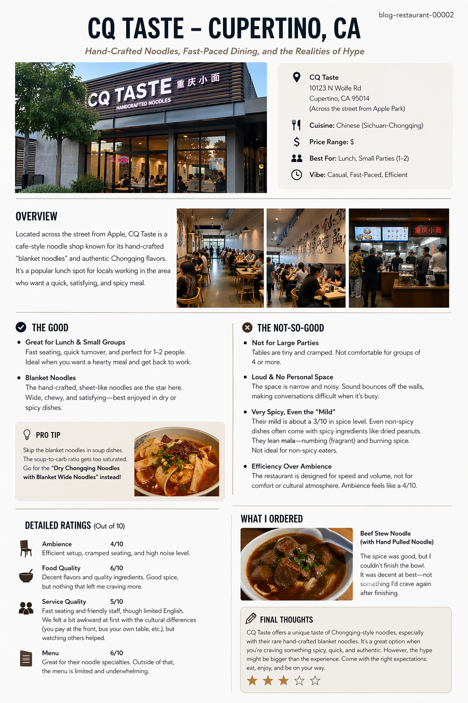

Quick Summary
CQ Taste is best approached as a lunch-focused noodle cafe rather than a place to sit, relax, and talk for a long time. Its strongest appeal is the specialty noodle concept, especially the blanket noodles, and the fact that it is convenient for a quick meal in Cupertino.
That said, the restaurant feels built for efficiency more than comfort. Seating becomes cramped once the place fills up, conversations can get difficult because sound bounces through the narrow room, and the menu leans heavily toward spicy flavors. For small groups who enjoy that style of meal, it can still be a good stop, but it is not somewhere I would recommend for larger parties or non-spicy eaters.
Gallery

Check this out! I made this.
Beef Stew with Hand Pulled Noodle
Ambience
4.0 / 10The ambience is the weakest part of the experience for me. The restaurant is set up for turnover and efficiency, not for comfort, culture, or extended conversation.
Food Quality
6.0 / 10The food is decent, but I did not feel the hype fully matched the experience. The craftsmanship is interesting, yet the flavor was not strong enough to make me crave coming back.
Service Quality
5.0 / 10The staff were kind, but the service style assumes a level of familiarity with the restaurant’s cultural rhythm. Once you understand that you pay at the front, the experience makes more sense, but it can feel awkward the first time.
Menu
6.0 / 10The menu is strongest when it focuses on the restaurant’s signature identity. Outside of that, I thought the rest of the selection was fine, but not particularly memorable.
Parking
8.0 / 10Parking is fairly solid here. The front spaces are convenient if you catch them at the right time, and having extra parking nearby in the same plaza makes the visit easier overall.
Final Verdict
CQ Taste is a niche lunch spot that makes the most sense for people who specifically want hand-crafted blanket noodles and do not mind a tighter, more fast-paced dining environment. It feels more like a quick specialty stop than a full restaurant experience built around comfort.
I would recommend it more for small groups, people who enjoy spicy noodle dishes, and anyone curious about the blanket noodle concept. I would not recommend it for large groups, long conversations, or diners who are sensitive to spice and looking for a more relaxed setting.
Disclaimer
This review is built around five core categories: Ambience, Food Quality, Service Quality, Menu, and Parking. Each category represents a distinct part of the dining experience and is evaluated independently to provide a more balanced and transparent assessment.
Ambience reflects how comfortable and functional the environment is. This includes noise level, seating layout, table spacing, and how easy it is to enjoy the space for the type of meal the restaurant naturally supports.
Food Quality focuses on taste, spice balance, texture, and overall execution. This category measures whether the food is enjoyable beyond novelty and whether it leaves a strong enough impression to want again.
Service Quality evaluates efficiency, friendliness, clarity, and how easy it is to understand the dining process. This includes seating, communication, and how comfortable the experience feels for first-time visitors.
Menu represents variety, clarity, and how strong the restaurant’s signature identity is. A strong menu should stand out for what it specializes in while still feeling worthwhile outside of just one or two popular items.
Parking considers accessibility and convenience. While it is not part of the food itself, it affects the overall ease of visiting the restaurant, especially in busy commercial areas where nearby overflow parking can make a difference.
These five categories are selected because together they represent both the core product and the surrounding experience. The final rating is calculated as an average of all five scores, allowing each category to contribute equally to the overall evaluation.